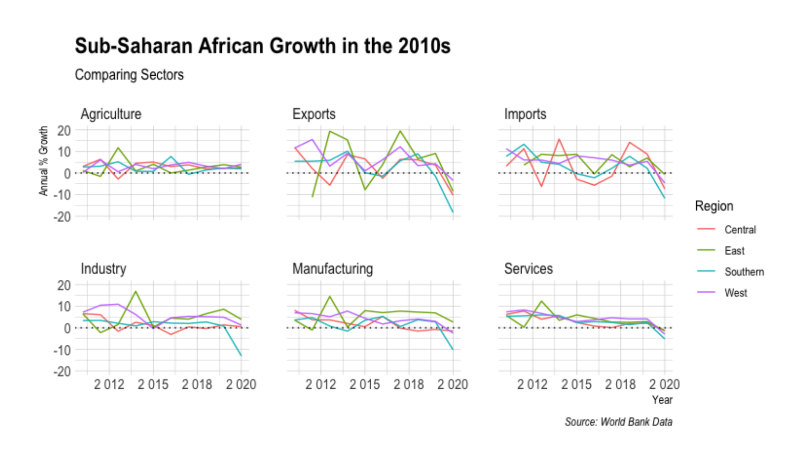

Population Growth in the Last Decade by Age Group

Population Growth is driven by high birth rates, lower death rates, and is over 1.2 billion today
Sectoral Changes in the Last Decade

The economy has been relatively stagnant for several sectors and also vulnerable
Growth by Region
Each circle is a country in a given year. When a point is above the horizontal line, GDP growth is positive. The vertical line is the average GNI in sub-Saharan Africa in 2020.
Greenhouse Gas Emissions Per Capita in the last Decade

The darker the green, the lower the mean emissions (Carbon Dioxide Tons) per capita of a country in the time period of 2011-2020
Source: World Bank Data and Natural Earth